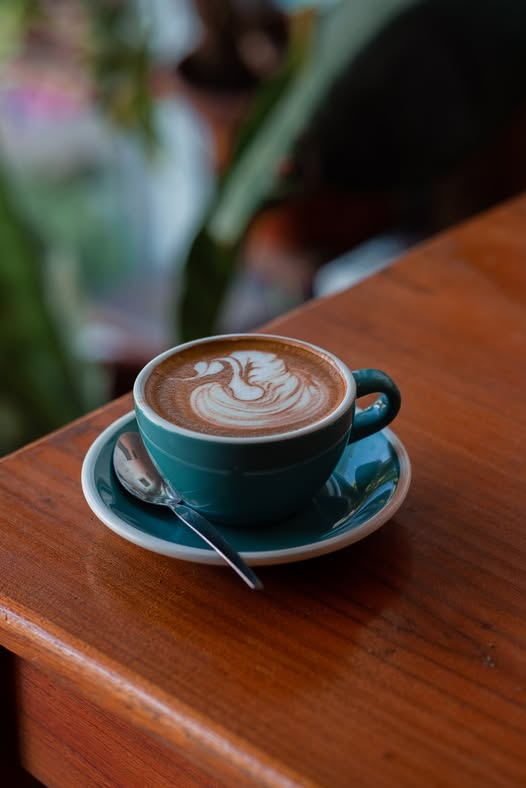
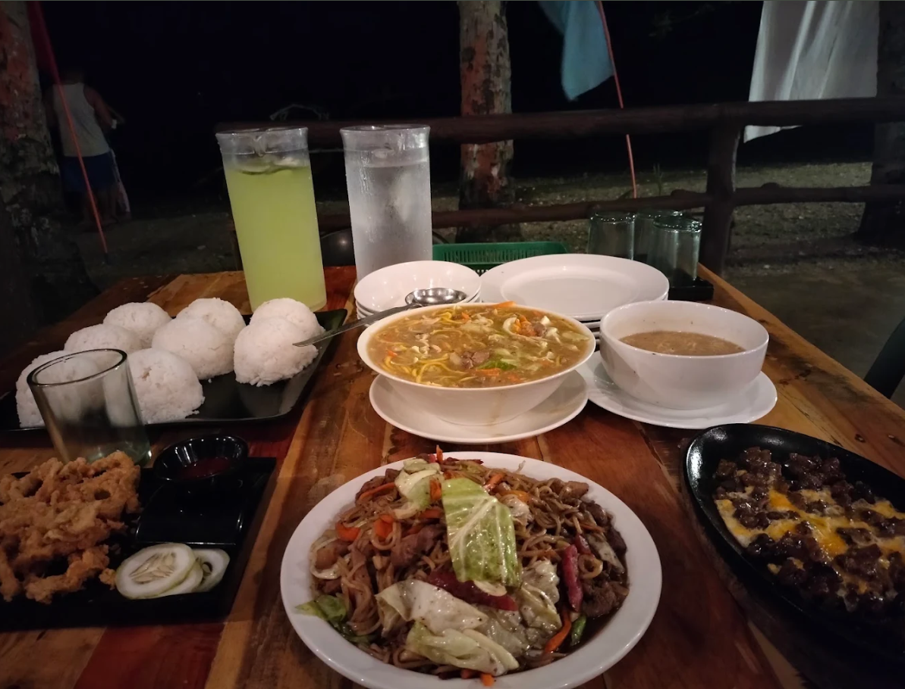
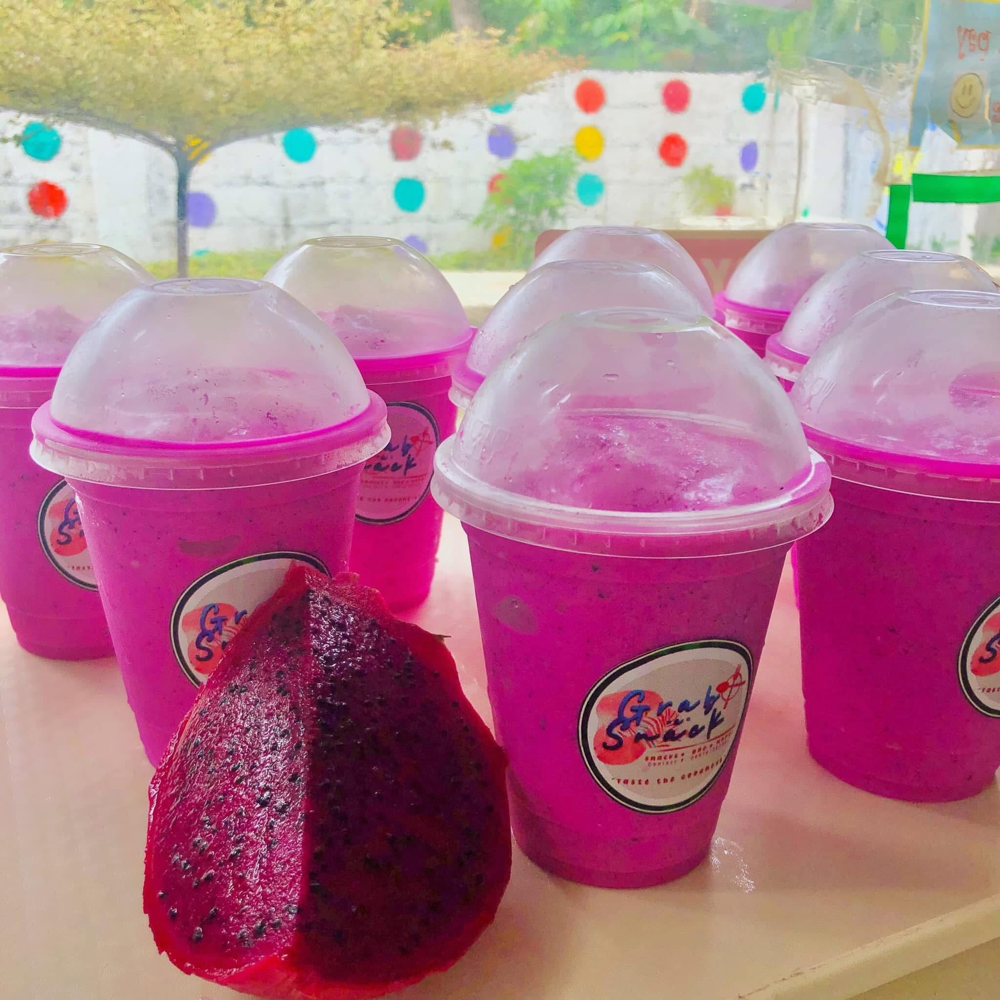

Resort Restaurant
Nouveau Resort
An elegant resort restaurant in Tupsan Pequeño offering a mix of international and local cuisine in a peaceful, upscale setting overlooking the sea.
Local Flavors
Fresh catch, home cooking, and island favorites from Mahinog's local eateries.
An elegant resort restaurant in Tupsan Pequeño offering a mix of international and local cuisine in a peaceful, upscale setting overlooking the sea.

A popular floating seafood restaurant and resort. Known for its relaxing ambiance, it offers fresh Filipino cuisine where diners can catch their own fish and have it cooked on-site.

Famous for its relaxing ambiance, the bistro features a fish pond where you can catch your own bangus (milkfish) to be grilled fresh

A cozy local café near Benoni Port, known for its relaxed atmosphere, coffee, fruit shakes, and affordable comfort food.

An open-air restaurant and view deck known for serving fresh seafood like grilled tuna panga, boodle fights, and Filipino favorites — a popular spot for family gatherings.

Known for their affordable and refreshing fruit shakes, they also serve classic comfort snacks such as cheeseburgers and french fries.